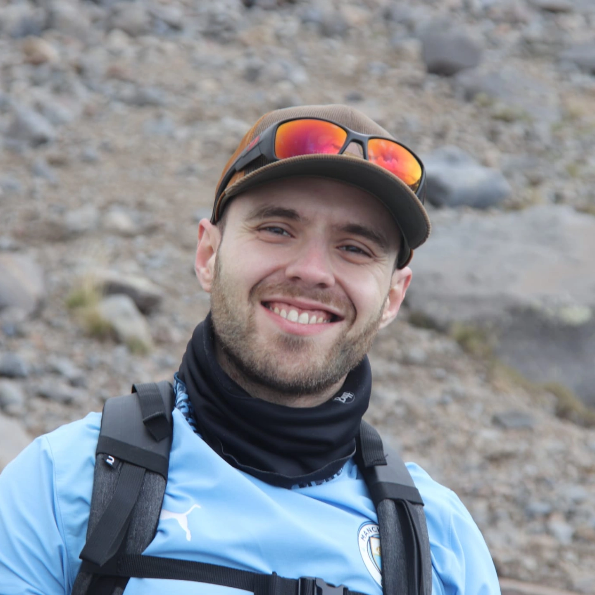

Sites web pour commerçants · Bruxelles & alentours
Je crée des sites clairs pour votre boulangerie, restaurant ou commerce de quartier — pour que vos clients vous trouvent et vous contactent facilement.
Idéal pour

Services
Un site web professionnel est aujourd'hui indispensable pour tout commerce local — mais il n'a pas besoin d'être compliqué ni hors de prix. Je vous propose un site pensé pour votre commerce et votre clientèle bruxelloise.
Chaque projet est traité personnellement, de la première discussion à la mise en ligne. Pas d'équipe anonyme, pas de template générique.
À quoi ça ressemble
Des exemples de démonstration pour vous montrer le rendu possible — comme si vous visitiez le site d’un vrai commerce.
Au-delà du site vitrine
Pour les entreprises ou structures qui ont besoin d'aller plus loin : connexion à des outils existants, automatisation, tableaux de bord.
Qui suis-je
Parcours
Je m'appelle Guillaume Rochedix. Basé à Uccle, je suis votre interlocuteur direct — pas une hotline, pas un commercial.
Mon travail à temps plein en entreprise m'a habitué aux délais, aux engagements tenus et au travail soigné. Cette même exigence s'applique à votre site, même s'il s'agit d'une vitrine pour votre commerce de quartier.
En pratique, cela veut dire : vous savez qui fait quoi, vous suivez l'avancement, et on parle la même langue — en français ou néerlandais, selon votre clientèle.
Je travaille surtout avec des commerçants et indépendants bruxellois : boulangerie, restaurant, boutique, cabinet… Des gens qui n'ont pas le temps de s'occuper du « web », et qui veulent un site simple, utile et fiable.
Méthode
Un processus clair et transparent, du premier contact à la mise en ligne. Pas de surprise, pas de délais flous. Je m'adapte à votre rythme — et le mien.
Contact
Une idée, une question, ou juste envie de voir si je peux vous aider ? Écrivez-moi. Je réponds dans les 48h — généralement en soirée ou le week-end.